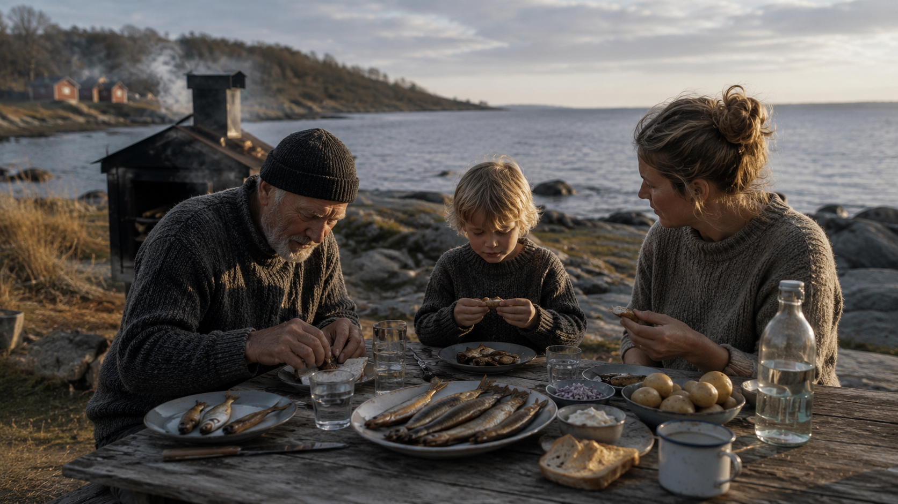
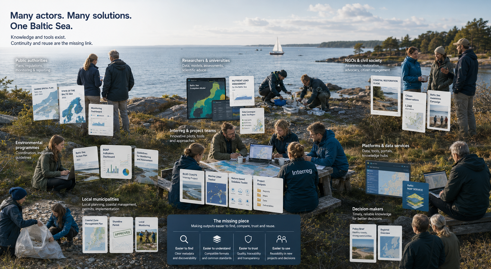
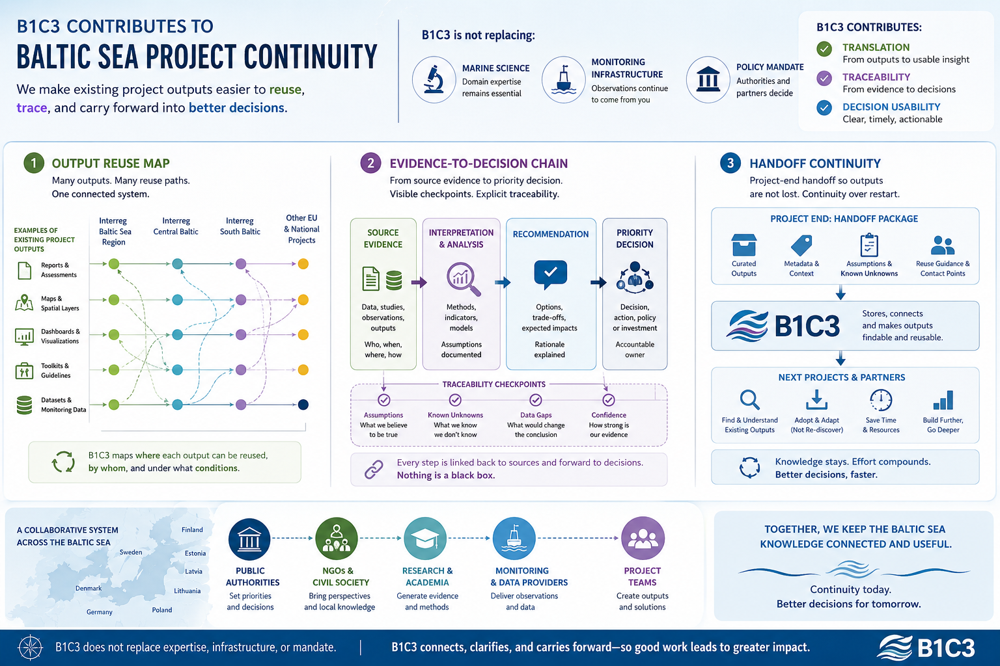

Unique Sea
The Baltic is a brackish system with distinct ecological conditions, not an interchangeable coastline.
Primary focus track, partner-facing.
B1C3 is building a practical evidence-to-decision layer for Baltic restoration work, with one core intent: make existing project outputs easier to find, compare, and reuse across projects.
This work did not start as a generic market opportunity. It started from lived context and responsibility: born near Sweden's Baltic coast, and wanting future generations to still have a living sea where traditions like boeckling (bockling) can remain real.
Personal origin note: Borrowed Fluency.
The personal reason is not a substitute for evidence. It is the reason to do the evidence work seriously.

The Baltic is a brackish system with distinct ecological conditions, not an interchangeable coastline.
Many countries, agencies, and projects are involved. Preservation requires coordination, not isolated effort.
Coastal livelihoods, food culture, and local identity depend on a sea that remains alive and usable.
The system is pressured, but not hopeless. Better use of existing evidence can improve intervention quality.
This is not a full explanation for all Baltic Sea outcomes. It is the specific execution gap B1C3 is choosing to focus on: low reuse and low traceability between what projects produce and what later decisions actually use.

B1C3 does not claim to replace marine science, monitoring infrastructure, or policy mandate. The contribution is in translation, traceability, and decision usability.
Track which outputs exist, what problem they address, and where they are already reusable across active projects.
Make recommendation logic explicit from source evidence to priority choice, including known unknowns and assumptions.
Reduce project-end loss by packaging outputs so later teams can adopt them without re-discovery cost.
Locked direction: improve how Interreg outputs are used by other projects.

Interreg partners, HELCOM-adjacent actors, NGOs, and public authorities that need better output reuse and decision traceability.
Requests for field deployment, sensor operations, or policy mandate substitution.
The immediate target is one validated continuity case where an existing project output is reused by another project with a documented decision trace.
If you work in Baltic restoration and face this exact reuse gap, contact: contact@b1c3.dev